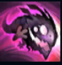
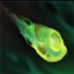
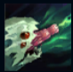
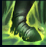
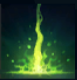

Kog'Maw
| Kog'Maw The Mounth Of The Abyss | |
|---|---|
| Release date | 24.06.2010 |
| Class | Marksman |
| Positions | Bottom |
| Resource | Mana |
| Range type | Ranged |
| Adaptive type | Physical |
| Base statistics | |||
| Health | 565 – 2010 | Mana | 325 – 1005 |
| Health regen. | 3.75 – 13.1 |
Mana regen. | 8.75 – 20.65 |
| Armor | 24 – 79.25 | Attack damage | 61 – 113.87 |
| Magic resist. | 30 – 38.5 | Crit. damage | 175% |
| Move. speed | 330 | Attack range | 500 |
Kog'Maw a pătruns în lume prin incursiunea Vidului în măruntaiele Icathiei. E o creatură a cărei gură căscată împroașcă salivă caustică și putredă, atât ca mod de atac, cât și pentru a cunoaște și înțelege lumea din jurul său. Deși nu are o natură malefică, naivitatea lui fascinantă este periculoasă și e deseori urmată de un ospăț sălbatic, nu pentru că ar avea nevoie de hrană, ci pentru a-și satisface curiozitatea nesfârșită. |  |
SURPRIZĂ ICATHIANĂ La 4 secunde după ce a murit, Kog'Maw explodează, provocându-le daune reale inamicilor din jur. |
||
|---|---|---|---|---|
 |
SALIVĂ CAUSTICĂ Kog'Maw lansează un proiectil coroziv care provoacă daune magice și diminuează pentru scurt timp armura și rezistența la magie a țintei. În plus, Kog'Maw primește un bonus la viteza de atac. |
|||
 |
FOC BIO-OCULT Atacurile de bază ale lui Kog'Maw au raza de acțiune mai mare și provoacă daune magice egale cu un procent din viața maximă a țintei. |
|||
|  |
MÂZGA VIDULUI Kog'Maw secretă o substanță purulentă care provoacă daune tuturor inamicilor prin care trece și lasă o dâră ce încetinește inamicii pe care îi atinge. |
|||
 |
ARTILERIE VIE Kog'Maw lansează pe o distanță foarte mare un proiectil care provoacă daune magice (daunele cresc considerabil împotriva inamicilor cu viață puțină) și dezvăluie țintele necamuflate. Dacă folosește ''Artileria vie'' de mai multe ori pe o durată scurtă, costul în mană al fiecărui proiectil crește. |